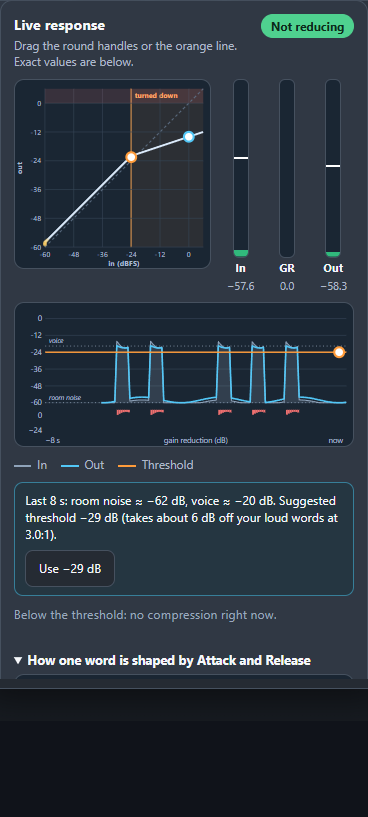
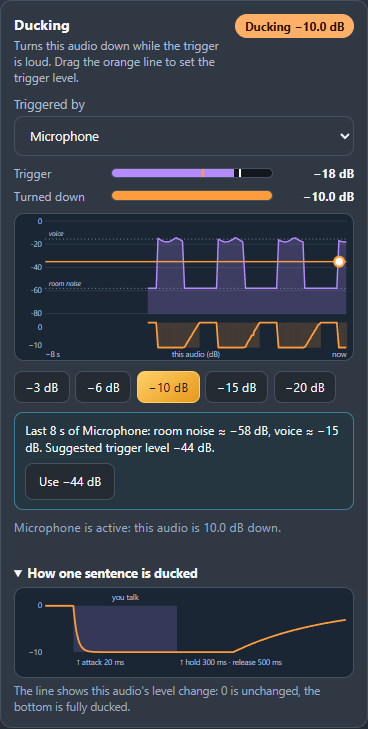

Motion pass: pan across large Advanced EQ, Graphic EQ, and Bass & Treble captures; a moving highlight tracks the existing EQ curve.
Hard cut · curve to dynamics
Live dynamics
LEVELS, UNDER CONTROL.

Compressor · Gate Limiter · Meter
04 · VOICE IN CONTROL
Motion pass: punch into the real Compressor, Gate, and Limiter captures. The local voice sample is a soundtrack cue; it was not routed through the captured session.
Hard cut · meter to spectrum
Make room for your voice
CLEAN VOICE. ROOM TO SPEAK.

Spectral Gate · Denoise · Duck
05 · CLEAN, SHAPE, DUCK
First move: live spectrum fills the shot, followed by profile learning and Duck reduction. The real trigger connection returns to the route.
First move: qualified plugin editor springs into view. Source changes, then the real recording timer starts.
Hard cut · network handoff
Built for streamers
TWO PCS. ONE STREAM.
Network SendGaming PC
Network ReceiveStreaming PC
Your mix, across your home network
07 · TWO PCS
First move: sending node leads left-to-right into the receiver. Actual node controls replace the labeled media blocks.
Hard cut · back to the audio journey
Know your audio journey
TUNE LIVE. SEE THE TIMING.
REAL TIMING VIEWtools → measured processing readings → full route
08 · SEE THE JOURNEY
First move: Timing panel expands into a readable closeup. Then pull out to the complete, running route; no invented speed numbers.
Hard cut · controls expand beyond the window
Control it your way
YOUR CONTROLS. YOUR ASSISTANT.
APIreal action → app responds
MCPreal assistant call → app responds
API + MCP
09 · CONTROL YOUR WAY
First move: API action produces a visible app change; then an authentic MCP interaction does the same. No code walkthrough or fake chat.
Hard cut · return to opening route
Your sound. Your setup.
AudioRouter
See your sound. Shape it. Send it anywhere.
github.com/MrDesjardins/audiorouter
Get the Windows preview · Windows 11 · Unsigned
10 · MAKE IT YOURS
First move: route condenses into the name. Hold the clean final lockup so the invitation reads; music resolves.
Held finish · short music fade
One clear rhythm
01 → 02 → 03 → 04 → 05 → 06 → 07 → 08 → 09 → 10
Beat-led hard cuts inside each sequence. Spring entrances on headlines and framing; live product movement provides the action. No repeating slide animation. Final calm beat is intentional.
Product first
Inter/system sans. Dark product palette, aqua primary accent, violet support. Big readable typography. No fabricated UI, performance metrics, private audio, personal paths or tokens.
Real-screen review v3. Open the live HyperFrames preview to review the real canvas pan, captured inspector footage, captured tools, music, and voice. The contact sheets in snapshots show representative frames; motion can only be judged in the preview. The local voice sample is an editorial cue and was not routed through AudioRouter. Final MP4 rendering remains pending your review.